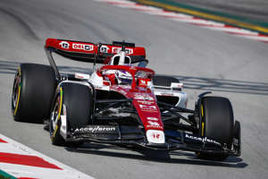

Zhou Guanyu è nato a Shanghai il 30 maggio 1999, è un pilota automobilistico cinese, attivo in Formula 1 con l'Alfa Romeo. Dal 2014 al 2018 ha fatto parte della Ferrari Driver Academy, passando nel 2019 al programma Renault Sport Academy mentre dal 2022 guida per la Alfa Romeo F1 Team in Formula 1. Nel 2015 fa il suo esordio nelle monoposto, gareggiando nella Formula 4 italiana con il team Prema, con cui aveva già corso in un evento invernale alla fine del 2014. Con tre vittorie (tutte ottenute a Monza) e 9 podi in totale si piazza al secondo posto in classifica generale, dietro solo al compagno di squadra Ralf Aron. Nella stagione partecipa anche ad alcune gare del campionato tedesco, ottenendo due podi.È stato ammesso alla formula 1 in Alfa Romeo. I buoni risultati in Formula 4 gli permettono il salto di categoria e nella stagione 2016 passa in F3 europea con il team Motopark. Nella stagione di esordio conclude il campionato in tredicesima posizione con 101 punti, riuscendo a conquistare due terzi posti come miglior risultato. Nella stagione 2019 esordisce in Formula 2 gareggiando con il nuovo team UNI-Virtuosi in coppia con Luca Ghiotto, sul circuito di Silverstone Zhou segna la sua prima pole position in Formula 2, diventando il primo pilota cinese a farlo. Zhou finisce settimo in campionato e viene premiato con il Premio Anthoine Hubert come miglior Rookie della categoria  Nel 2014 dopo ottime stagioni nei kart entra nella Ferrari Driver Academy. Nel 2018 lascia la Ferrari Driver Academy per unirsi a quella Renault. Nel dicembre del 2020 partecipa ai test post stagionali della Formula 1 sul circuito di Yas Marina, alla giuda della Renault R.S.20 insieme a Fernando Alonso. Per la stagione 2021 viene confermato come terzo pilota del rinominato team Alpine F1 Team. Zhou prenderà per la prima volta parte ad un weekend di Formula 1, guidando la Alpine A521 di Fernando Alonso nelle FP1 del Gran Premio d'Austria. Nel agosto del 2021 Zhou insieme a Oscar Piastri partecipano ai test della Alpine sul Circuito di Monza a guida della Renault R.S.18 Il 16 novembre 2021 l'Alfa Romeo Racing annuncia Zhou come pilota titolare per la stagione 2022 al posto di Antonio Giovinazzi, in coppia con il finlandese Valtteri Bottas; al debutto, Zhou diventerebbe il primo pilota cinese a prendere parte a un Gran Premio di Formula 1. Zhou come numero di gara sceglie il 24, numero usato l'ultima volta da Timo Glock nel 2012.